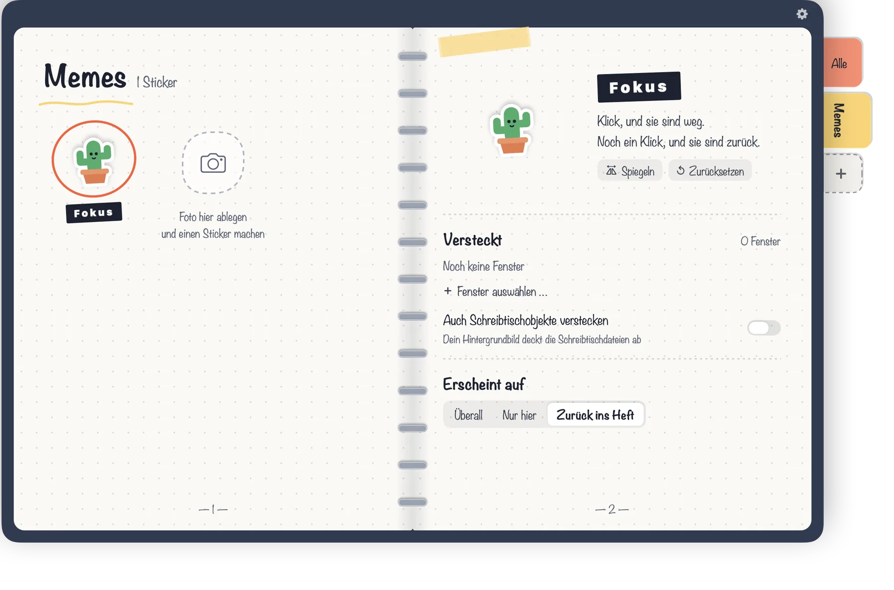

Ein Stickerheft für deinen Mac-Schreibtisch
Klick auf den Sticker. Und die Fenster sind weg.
Kleb Shoo auf deinen Schreibtisch und sag ihm, um welche Apps oder Fenster es sich kümmern soll. Ein Klick, und alles verschwindet; noch ein Klick, und alles ist genau da, wo es war.
Im Mac App Store laden

Jeder Sticker kümmert sich um einen Teil dieser Seite. Klick einen an.
Ein Klick. Aufgeräumter Schreibtisch.
Probier’s aus: Wähl eine Situation und klick auf das Teufelchen.
Mach es zu deinem
Mach aus jedem Foto einen Sticker — deinen Hund, deine Freunde, dein Lieblingsmeme — und gib jedem seine eigene Aufgabe.

Zieh ein Foto ins Heftoder klick einfach darauf
- Foto reinziehen, Shoo schneidet es direkt auf deinem Mac aus
- Sticker in eigene Tabs und Farben sortieren
- Jeder Sticker versteckt seine eigenen Fenster
So geht’s
Drei Schritte, keine Einstellungsseiten.
Sticker abziehen
Zieh einen Sticker aus dem Heft und leg ihn irgendwo auf den Schreibtisch.
Auf die Fenster zeigen
Wähle „Fenster auswählen …“ und klick auf die Fenster oder Apps, um die sich der Sticker kümmern soll.
Klick. Und weg!
Klick auf den Sticker, um alles zu verstecken. Noch ein Klick holt alles zurück.
Kleinigkeiten, die es angenehm machen
Alles passiert auf deinem Mac, direkt im Heft.
- Ein Fenster oder die ganze AppSafari, Chrome und Notizen können ein einzelnes Fenster verstecken; andere Apps werden als Ganzes versteckt.
- Auch den Schreibtisch versteckenSolange ein Sticker aktiv ist, deckt dein Hintergrundbild die Dateien auf dem Schreibtisch ab.
- Alle Schreibtische oder nur dieserKleb einen Sticker auf jeden Schreibtisch oder lass ihn auf einem.
- Direkt im Heft bearbeitenUmbenennen, Größe ändern, drehen und spiegeln, genau dort, wo du die Sticker siehst.
- Steht nicht im WegZeig Shoo im Dock, in der Menüleiste oder nirgends.
- Zehn SprachenEnglish, Español, Deutsch, Français, Português, 繁體中文, 简体中文, 日本語, 한국어, ไทย.
Kostenlos starten
Das kleine Teufelchen bekommst du gratis, mit allen Funktionen. Den Rest schaltest du einmal frei, ohne Abo.
 Gratis
Gratis
Das kleine rote Teufelchen
- Alle Funktionen auf einem Sticker
- Fenster, Apps und Schreibtisch verstecken
- Alle Sprachen
 Alles freischalten
Alles freischalten
Einmalkauf
- 5 weitere handgezeichnete Sticker
- Sticker aus deinen eigenen Fotos
- Eigene Tabs und Farben
- So viele Sticker, wie du willst

Dein Schreibtisch bleibt deiner
- Kein Konto, keine Werbung, kein Tracking
- Sticker und Einstellungen bleiben auf deinem Mac
- Fotos werden auf deinem Mac ausgeschnitten, nichts wird hochgeladen
- Shoo versteckt und zeigt nur die Fenster, die du ausgewählt hast, und liest nie, was darin steht
Fragen
Warum fragt macOS, ob Shoo Safari, Chrome oder Notizen steuern darf?
So versteckt Shoo ein einzelnes Fenster dieser Apps. Shoo sagt der App nur, dass sie das ausgewählte Fenster ausblenden oder zeigen soll. Wenn du ablehnst, versteckt Shoo stattdessen die ganze App.
Kann ich alle Fenster jeder App verstecken?
Ja. Jede App lässt sich als Ganzes verstecken. Einzelne Fenster gehen bei Safari, Chrome und Notizen.
Ist das ein Abo?
Nein. Shoo ist mit dem Teufelchen-Sticker kostenlos. Alles freizuschalten ist ein einmaliger Kauf.